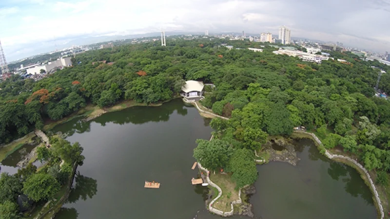
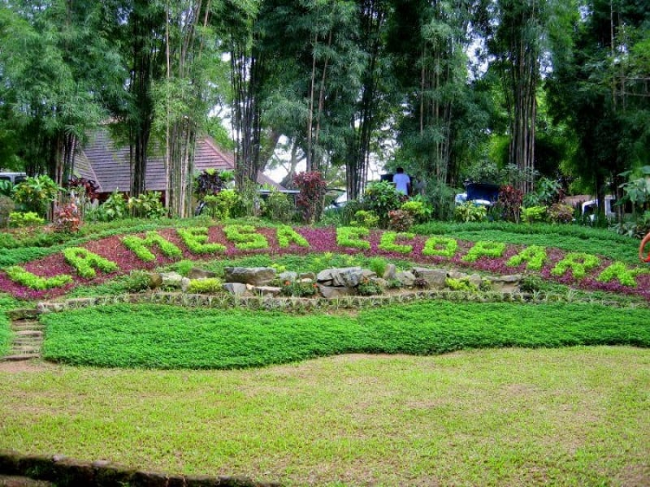
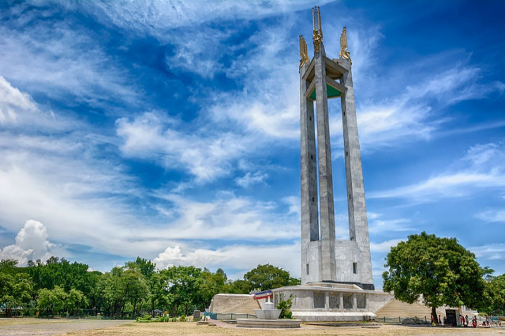
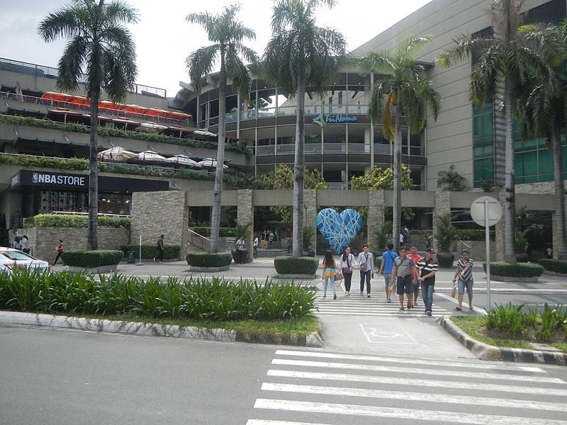

A lot of people in Metro Manila seem to forget about this massive park in Quezon City, mainly because it is already surrounded by bigger and more prominent attractions. The park is currently managed by a staff bureau of the Department of Environment and Natural Resources (DENR) and is a great option for a budget ecotourism trip. Aside from the thriving flora and fauna within the centre, there’s also a fishing village, tea house, amphitheatre and several picnic areas.

2. La Mesa Ecopark
La Mesa Ecopark is the Central Park of New York, the Kinabalu National Park of Malaysia and the Burnham Park of Baguio in one place. Various recreational opportunities await in the 33-hectare park, including trekking, cycling and fishing. For ecotourists, you’ll especially appreciate the Shell Flower Terraces, Orchidarium, Ecomuseum and the Butterfly Trail and Hatchery.

3. Quezon City Memorial Circle
A lot of people in Metro Manila seem to forget about this massive park in Quezon City, mainly because it is already surrounded by bigger and more prominent attractions. The park is currently managed by a staff bureau of the Department of Environment and Natural Resources (DENR) and is a great option for a budget ecotourism trip. Aside from the thriving flora and fauna within the centre, there’s also a fishing village, tea house, amphitheatre and several picnic areas.

4. North Avenue
Malls are often a staple destination for family bondings. They’re air-conditioned, fully stocked with retail items for kids’ and adults’ shopping and filled with restaurants. In Quezon City, two of the most visited malls are SM North EDSA and TriNoma along North Avenue. Both have become icons of the city through the years and have faced major developments to accommodate their thousands and thousands of visitors every day. There won’t be a single hour wasted here with the family!

5. Art in Island
Prepare for magnificent sights of art and light crafted with the latest media technology, and a fully immersive experience that transcends time and space. Located in Quezon City, Art in Island: The Media Square is the largest Mixed Media Art Museum in the Philippines. Witness a mesmerizing, surreal world of mixed media through light displays, animated projections, and art installations. Art in Island's new content will allow you to discover and appreciate various artforms as you explore each gateway into the museum.